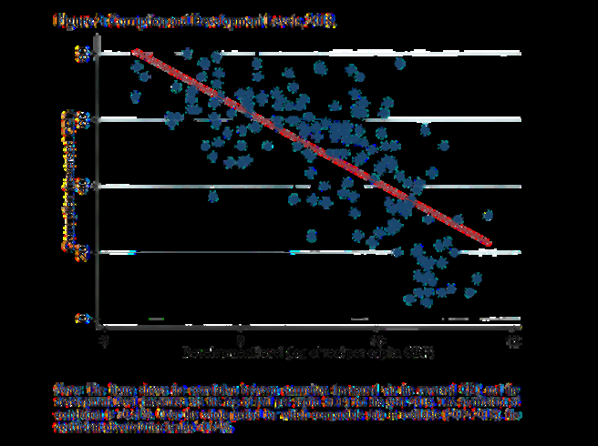
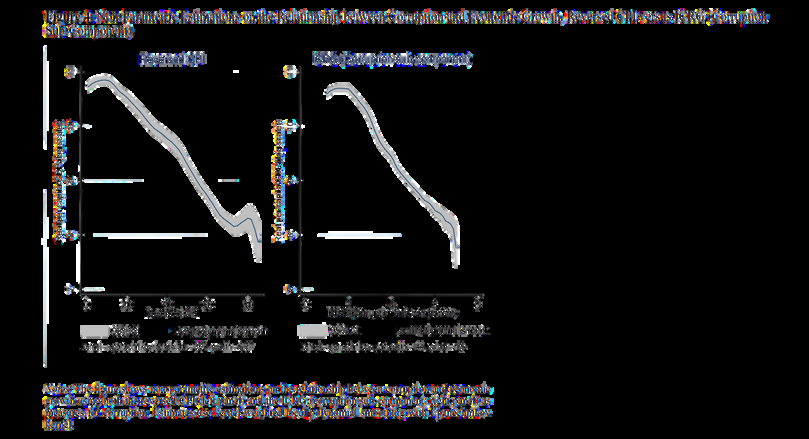
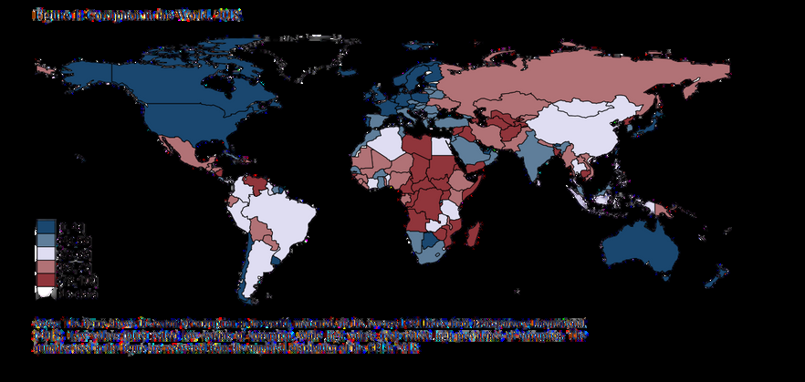

When it comes to corruption, we assume it to only have negative impacts. But could it be that for any reason it could also have positive outcomes? Or to what extent does corruption affect an economy? These questions challenge our intuitions and point toward a complex relationship between corruption and economic growth that researchers have studied for decades.
Two competing theories
We can start by broadly explaining the two existing theories regarding the effects of corruption. The first is the "grease the wheels" theory, which states that with corruption, if regulations are not being followed as they should and if there are strict rules for new firms entering the market, then buying off authority officials and people of political power may result in increased economic activity. It is seen that corruption is more prevalent in countries that are not developed and that have little protection of property rights. Investments that would normally not have been possible become possible through this new channel — corruption — thereby livening the economy and increasing growth.
Corruption can have a two-way effect on economic growth, depending on the dynamics of several factors.

The second perspective is the "sand in the wheels" theory, which states the opposite: independent of how much corruption there is and for how long it persists, the losses occurring in the potential for transformation and in production will result in reduced economic growth. This theory suggests that corruption always impedes economic performance.
What the empirical evidence shows
To examine these theories more rigorously, consider the work of Gründler and Potrafke (2019), who studied the period 2012–2018 (a methodology change in 2012 limited their coverage). Their results propose that there can be a loss of real GDP per capita of 10% in the short run when corruption elevates by one standard deviation. Looking at the marginal effect, the loss is approximately 4%. In the long run, they found the loss to be near 17%. It is worth noting that while this study finds a linear relationship, several other studies have identified non-linear, inverse U-shaped relationships and relationships that depend on institutional conditions.


Institutions and the allocation of resources
A crucial distinction emerges when we compare well-established, functional institutions with poorly established, inoperative ones. In poorly established institutions, there is a misdistribution of input. Inputs are manipulated and mostly utilized for intermediary purposes — essentially corruption — rather than for creating actual output. This leads to a loss in motivation and reduced productive capacity. In contrast, well-established institutions create a space where only a small share of inputs are allocated for intermediary use. Consequently, more actual output can be produced, thereby pushing economic growth. The expansion or shrinkage in growth determined by institutions relies on the total effects originating from both direct and indirect factors.
Corruption, investment, and geography
Another noteworthy point is how economic growth is affected by the effects of corruption on investment. This relation is visible through foreign direct investments: because low-risk investors are less likely to invest in high-corruption countries, they shift their investments to more low-corruption countries, thereby lowering the FDI of high-corruption nations. One more discussion concerns the relation between geographical location, corruption, and GDP. Since bordering countries engage in political activities, migrations, and trade, we might suspect corruption in one country to be positively correlated with corruption in a neighboring country. However, when tested further, there is no significant correlation between the degree of corruption in bordering countries and the GDP of the original country. According to the findings of Beyaert et al. (2023), continents can be grouped according to corruption levels: Latin America and Africa as high-corruption regions, Europe and North America as low-corruption regions, and Asia as immensely variant.
Conclusion: A complex relationship
Corruption can have a two-way effect on economic growth. A variety of research has approached the matter through different lenses: development, quality of institutions, effects on investments, and geographical location. Whether corruption is detrimental or beneficial is dependent on the dynamics of several factors, including institutional strength, regulatory environment, and investment climate.
Selected references
- Beyaert, A., García-Solanes, J., & Lopez-Gómez, L. (2022). Corruption, quality of institutions and growth. Applied Economic Analysis, 31(91), 55–72.
- Cieślik, A., & Goczek, Ł. (2017). Control of corruption, international investment, and economic growth—Evidence from panel data. World Development.
- De Vaal, A., & Ebben, W. (2011). Institutions and the relation between corruption and economic growth. Review of Development Economics, 15(1), 108–123.
- Gründler, K., & Potrafke, N. (2019). Corruption and economic growth: New empirical evidence. European Journal of Political Economy.
- Leff, N. H. (1964). Economic development through bureaucratic corruption. American Behavioral Scientist, 8(3), 8–14.